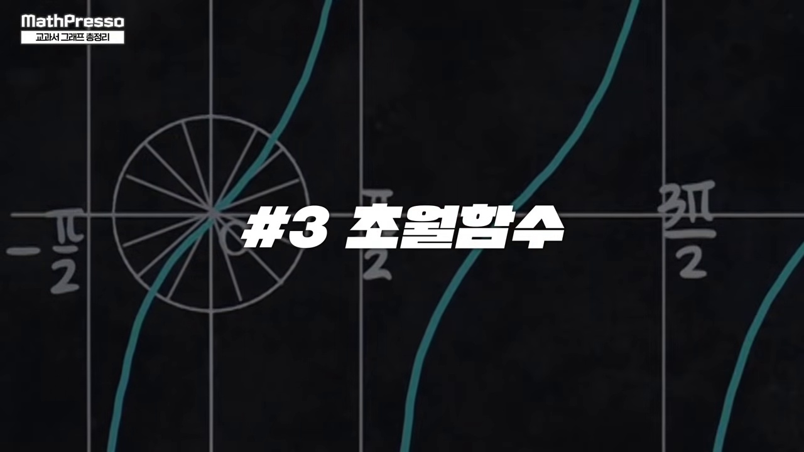
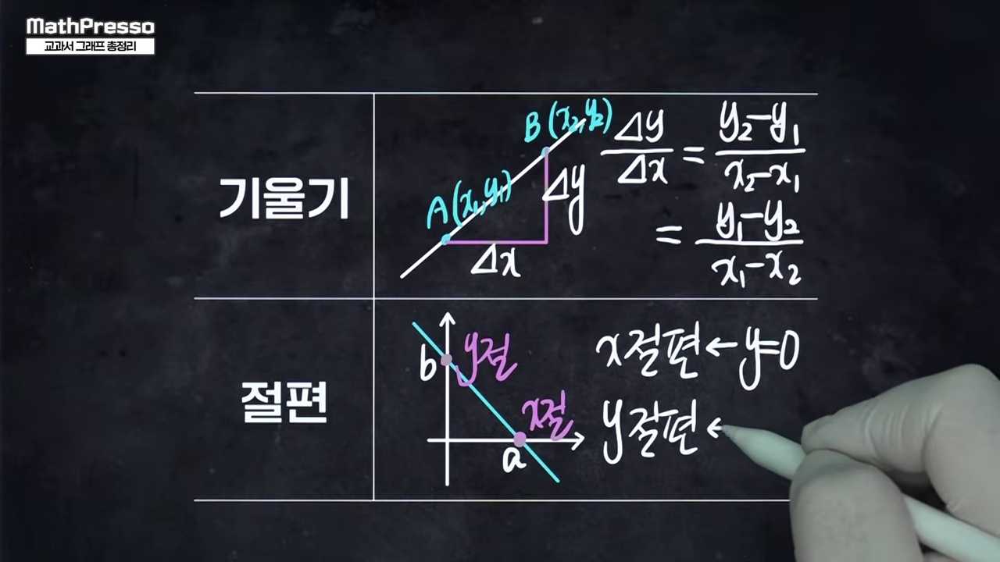
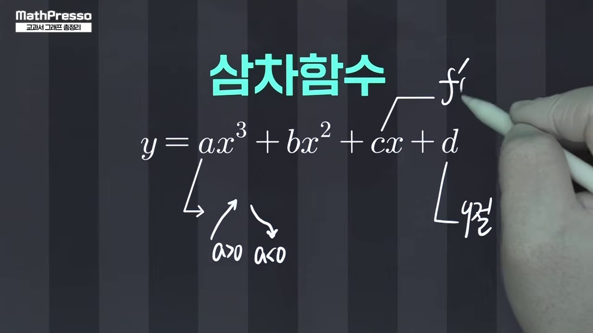
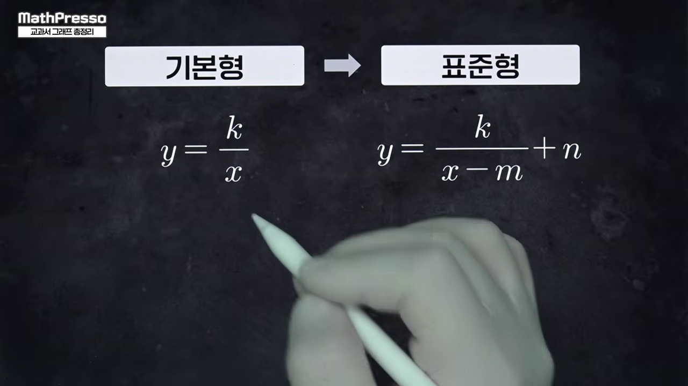
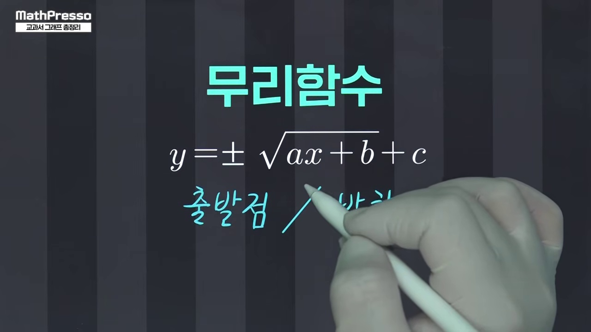
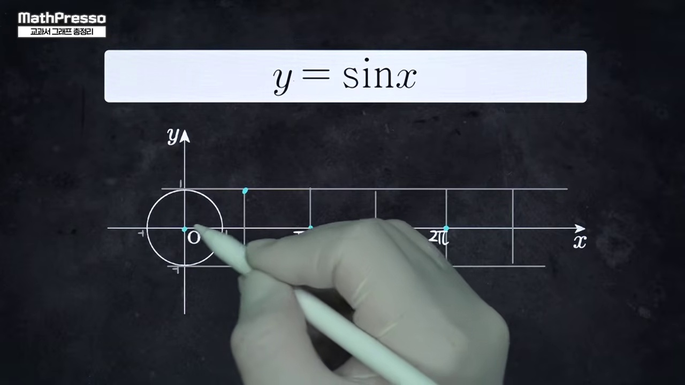
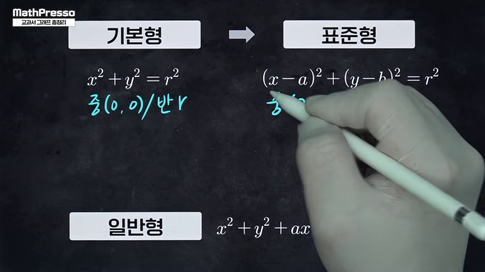
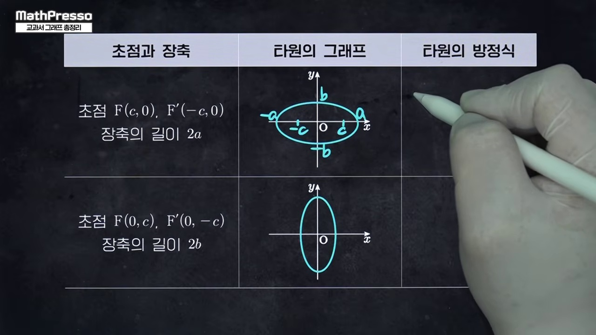
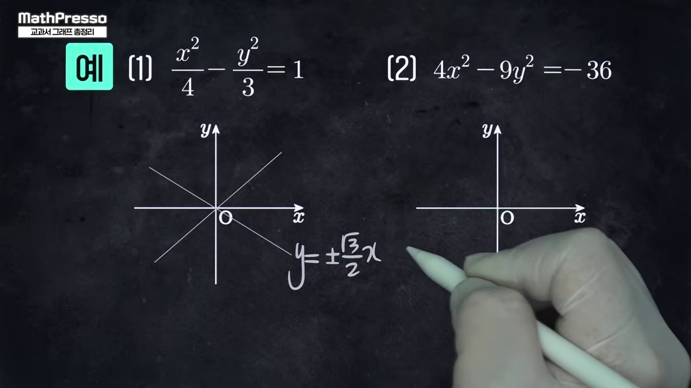

"수학 시험지에 등장하는 모든 곡선은 단 14개뿐이다!"
다항함수부터 분수·무리함수, 초월함수, 이차곡선까지 이어지는 대한민국 고교 수학의 완전한 계통도:
4대 곡선 패밀리(다항식 4총사 · 분수무리 · 초월함수 · 이차곡선 4형제)의 수식, 대칭성, 점근선, 초점을 원클릭 인터랙티브 캔버스로 총망라합니다.

고등학교 수학 전체에 걸쳐 등장하는 모든 곡선을 4대 그룹으로 분류한 전체 로드맵을 제시합니다.

차수 증가에 따른 굴절 횟수와 극값의 최대 개수 규칙을 완벽 정리합니다.

홀수차수(점대칭 변곡점)와 짝수차수(선대칭 축)의 본질적 차이를 시각화합니다.

평행이동과 대칭의 중심이 되는 두 점근선 (x=p, y=q)의 핵심 역할을 분석합니다.

근호 안이 0 이상이어야 한다는 제약조건에서 발생하는 곡선의 출발점 메커니즘을 밝힙니다.
직선 y = x를 기준으로 완벽히 포개어지는 지수와 로그의 상호보완적 구조를 배웁니다.

원운동이 시간축으로 펼쳐지며 만들어지는 사인, 코사인, 탄젠트의 주기성과 점근선을 다룹니다.

원뿔 단면에서 파생되는 원과 준선-초점 거리가 같은 포물선의 기하학적 정의를 점검합니다.

거리의 합이 일정한 타원과 거리의 차가 일정한 쌍곡선의 점근선 공식을 비교합니다.

14개 그래프의 수식, 대칭성, 점근선, 핵심 암기법을 한눈에 담은 종합 차트로 마무리합니다.
고등학교 3개년 교과서 곡선의 4대 대분류
| 분류 | 함수/곡선 | 표준형 수식 | 핵심 기하 성질 |
|---|---|---|---|
| 다항 | 1. 일차함수 | $y=ax+b$ | 기울기 $a$, $y$절편 $b$ 직선 |
| 다항 | 2. 이차함수 | $y=a(x-p)^2+q$ | 꼭짓점 $(p,q)$, $x=p$ 축 대칭 포물선 |
| 다항 | 3. 삼차함수 | $y=ax^3+\cdots$ | 변곡점 점대칭, 8칸 박스 $2:1$ 접선 분할비 |
| 다항 | 4. 사차함수 | $y=ax^4+\cdots$ | 이중접선 선대칭 W형, $1:\sqrt{2}$ 비율 |
| 대수 | 5. 유리함수 | $y=\frac{k}{x-p}+q$ | 점근선 교점 $(p,q)$ 점대칭 직각쌍곡선 |
| 대수 | 6. 무리함수 | $y=\sqrt{ax+b}+c$ | 시작점과 방향, 포물선의 역함수 반쪽 |
| 초월 | 7. 지수함수 | $y=a^x$ | 수평 점근선 $y=0$, 정점 $(0,1)$ |
| 초월 | 8. 로그함수 | $y=\log_a x$ | 수직 점근선 $x=0$, $y=x$ 역함수 대칭 |
| 초월 | 9. 삼각(sin/cos) | $y=A\sin(Bx)$ | 주기 $2\pi/B$, 진폭 $A$ 8칸 파동 |
| 초월 | 10. 삼각(tan) | $y=A\tan(Bx)$ | 주기 $\pi/B$, 점근선 $x=\frac{\pi}{2B} + \frac{n\pi}{B}$ |
| 이차곡선 | 11. 원의 방정식 | $(x-a)^2+(y-b)^2=r^2$ | 중심 $(a,b)$, 반지름 $r$ 원대칭 |
| 이차곡선 | 12. 포물선(기하) | $y^2=4px$ | 초점 $F(p,0)$, 준선 $x=-p$ |
| 이차곡선 | 13. 타원의 방정식 | $\frac{x^2}{a^2}+\frac{y^2}{b^2}=1$ | 거리의 합 $2a$, 원점 대칭 |
| 이차곡선 | 14. 쌍곡선(기하) | $\frac{x^2}{a^2}-\frac{y^2}{b^2}=\pm 1$ | 거리의 차 $2a$, 점근선 $y=\pm\frac{b}{a}x$ |
__MANIM_CODE_28__